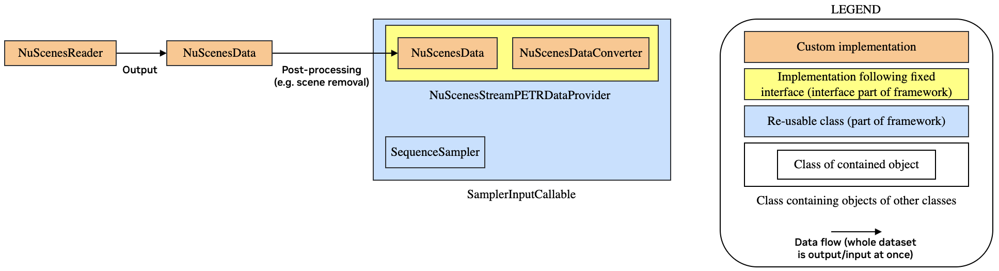

Data Loading for NuScenes
Note
The classes discussed here are not part of the core functionality of the package, and instead, are part of the examples. This is as they are specific to the example use-cases. However, the design & implementation provides a good reference or starting point for implementing custom data loading. For some use-cases using NuScenes, it may be possible to re-use it as is (or requiring only some minor changes, e.g. adding additional data such as lidar point clouds).
The implementation of all of the classes described here can be found in the repository in the
packages/dali_pipeline_framework/examples/pipeline_setup/additional_impl/data_loading/ directory.
Please see the docstrings & comments in the code for more details on the implementation.
Both of the included pipeline examples rely on the NuScenes dataset. However, the data which is used in the examples, and how the data needs to be structured, is different.
In the 2D object detection example, data for single images is used, and e.g. no geometry information (projection matrices, ego-poses etc.) or 3D ground truth bounding boxes are needed. In the StreamPETR example, this additional data is needed, and a single sample contains images from all 6 cameras from a single snapshot in time during the driving.
Note
This difference also means that the dataset is divided into samples differently. For the 2D object detection example, a single sample is defined by a single image, while for the StreamPETR example, a sample contains 6 images. This means that each sample of the StreamPETR example contains 6 samples of the 2D object detection example, and the size of the dataset is 6x larger for the latter.
As these use-cases still share a lot of functionality, we design the data loaders as follows:
NuScenesReader: Reads the original dataset meta-data and converts these into a format which facilitates fast and simple access to the individual samples (as defined in the NuScenes dataset, i.e. containing all data for a single point in time during the driving) and preserves the individual scenes (i.e. driving sequences). While this class does not include all the input data (e.g. lidar points), it is meant to be generic and is not implemented for a specific use case.NuScenesData: This is the dataset as obtained byNuScenesReader. Apart from acting as a data container, this class has also helper functions e.g. to split the scenes (sequences) into shorter sequences, to discard some of the scenes (e.g. for splitting into training & validation sets), and to sort the sequences by start time.Also, it provides helpers to convert between flat sample indices (i.e. understanding the whole dataset as a single list of samples) and sequence & in-sequence sample index pairs (i.e. understanding the dataset as a list of driving sequences, each containing multiple samples).
Furthermore, it provided functionality to store the contained data in the internal file to disk & to read it back. This can be used to avoid re-running
NuScenesReaderon every training run, as the conversion into the internal data format may be expensive for large datasets.NuScenesDataConverter: Provides helper methods to work with NuScenesData data. Methods include the extraction of annotation data from the samples (including e.g. extraction of bounding boxes in either global or lidar coordinates, obtaining the object velocities etc.) and to convert data to a format which can be used inside the pipeline (e.g. converting pose quaternions to matrices).It is also responsible for reading the images given the image locations defined in the meta-data (note that the actual decoding happens as a processing step in the pipeline, not here). Similarly to
NuScenesReader, this class is not designed for a specific use-case. Instead, it provides methods which are useful for some of the use-cases.Nuscenes2DDetectionDataProvider: This is theDataProviderspecialization for the 2D object detection use-case. It uses an instance ofNuScenesDataand functionality fromNuScenesDataConverterto provide samples for the use case of 2D object detection for the individual camera images. In contrast toNuScenesDataConverteritself, it is intended for a specific use-case and builds up the individual samples for that specific use-case.In order to minimize the amount of work for implementing a new use-case, only the use case-specific logic should to be implemented here, and more generic functionality should be implemented in the data reader, dataset, and converter classes (as is done in the classes described above for this use-case), enabling re-use in different use-cases.
NuScenesStreamPETRDataProvider: Similar toNuscenes2DDetectionDataProvider, but for the StreamPETR use-case.
{kind=link}

Design of the NuScenes data loader for the StreamPETR use-case. Note that in case of 2D object detection,
the NuScenesReader, NuScenesData and NuScenesDataConverter classes can be re-used, and only the
data provider needs to be implemented specifically for that use-case.